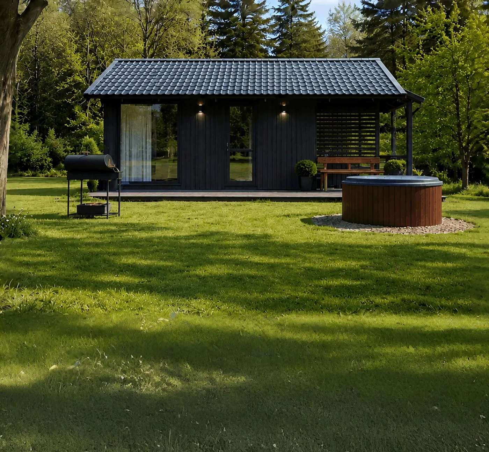
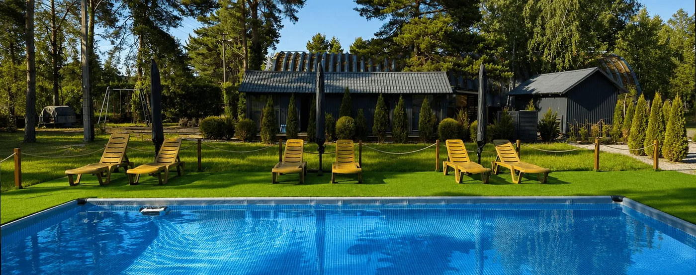

На воді: пірс і понтон
Човен уже на воді. Приїхали, відв'язали, пішли.
- Два причали: стаціонарний пірс і плавучий понтон
- Підхід до судна з обох боків
- Для тих, хто виходить на воду щотижня
Від
2500 ₴ / місяць
Стоянка човнів і катерів на Дніпрі під Вишгородом. Критий ангар на 10 суден і 50 місць надворі. Від 2500 ₴ на місяць. Спускаємо на воду за дзвінком, територія під охороною.
Ціни
Одна сума на місяць, без прихованих доплат за заїзд чи прохід на територію.
Човни коротші за 4 метри або довші за 10 — за домовленістю, зателефонуйте. Рахунок щомісяця приходить у Telegram із QR-кодом: сума вже вписана, вводити реквізити руками не треба.
Де стоятиме човен
Вибір залежить від двох речей: наскільки цінний човен і як часто ви виходите на воду.
Човен уже на воді. Приїхали, відв'язали, пішли.

Човен на кільблоці або причепі, вкритий щільним чохлом.

Закрите приміщення без вологи й ультрафіолету. Десять місць.
Критий ангар
Ультрафіолет вигорює гелькоут, а конденсат псує електрику. В ангарі немає ні того, ні іншого — і навесні човен виходить таким, яким зайшов.
Кого приймаємо
Беремо судна завдовжки до 10 метрів. Якщо ваш човен більший або незвичайної форми — зателефонуйте, подивимось окремо.
Жорсткий транець, підвісний мотор. Зберігаємо накачаними.
Алюміній або склопластик, відкритий кокпіт.
Напівкаютні. Найчастіший гість ангара.
Найбільші судна, які ми беремо.
Щогла знімається й зберігається окремо.
Коротші за 4 метри — ціну називаємо окремо.
Як це працює
Пишете довжину човна й бажаний тип місця. Передзвонюємо того ж дня.
Приїздите, оглядаєте причал і ангар, обираєте, де стоятиме судно.
Допомагаємо завести й закріпити. Записуємо судно та ваші контакти.
З 1 по 7 число приходить рахунок із QR — оплата з банку в два дотики.
Поруч
Станція стоїть поряд із базою відпочинку «Темп Дніпра». Шість будиночків із терасою й мангалом, басейн просто неба й чани з гідромасажем біля води. Можна приїхати за човном і лишитись на вихідні.


Бронювання
Підсвічені дні — ті, коли є вільні місця обраного типу. Натисніть день і заповніть коротку форму поруч.
Питання
Контакти
Причал і ангар найкраще один раз побачити на власні очі. Зателефонуйте — домовимось про час.